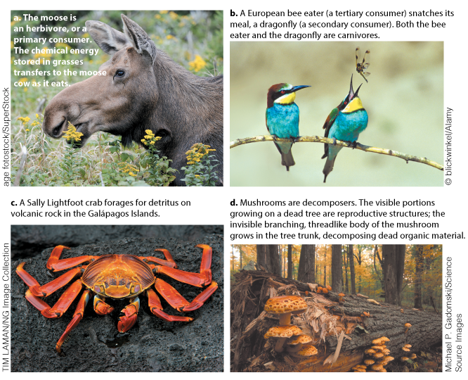
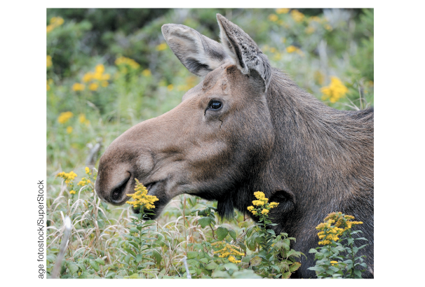
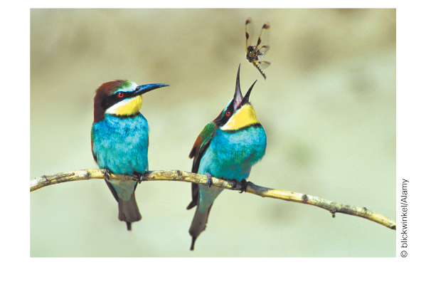
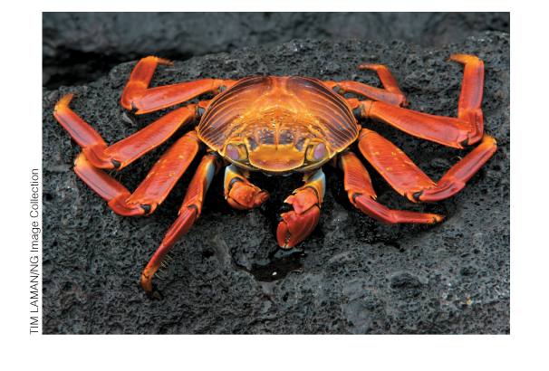
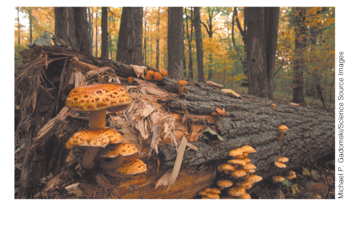

tab order
Organisms that do not manufacture their own food are consumers or decomposers.

This moose is an herbivore, or a primary consumer. Primary consumers are animals that eat producers, in this case flowering grasses. The chemical energy stored in the plants is transferred to the primary consumer as the animal eats.

The birds here, European bee eaters, are carnivores—animals that eat other animals--and also tertiary consumers. Tertiary consumers are animals that eat secondary consumers. The dragonfly, also a carnivore, is a secondary consumer because it eats primary consumers—mostly other flying insects. Secondary and tertiary consumers gain the energy they require from the bodies of the animals they eat.

This Sally Lightfoot crab is a consumer that eats detritus, organic matter made up of animal carcasses, leaf litter, and feces. Detritus feeders, which typically include worms, mollusks, crabs, insects, and millipedes, are abundant in both aquatic and terrestrial environments. These animals gain the energy they need when they consume the organic matter contained in the detritus. Here, the crab is feeding on detritus found on volcanic rock.

Mushrooms such as these are decomposers, organisms that gain needed energy by breaking down waste products and dead organisms—like this fallen tree. Decomposers, which are typically bacteria and fungi, release simple inorganic molecules from dead organisms, making them available for producers to use. Unlike the visible reproductive structures pictured, much of the mushroom’s body is invisible and threadlike, branching throughout the log as it decomposes dead organic matter.
